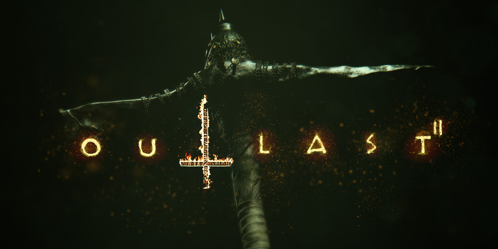

The Dark Horreur Night

Outlast 2
Outlast 2 est un jeu d'horreur de survie psychologique à la première personne en solo, développé par Red Barrels en 2017.
Alors que vous enquêtez sur la mort de Jane Doe, une adolescente enceinte, vous (Blake Langermann) et Lynn (votre femme) partez en expédition en hélicoptère au-dessus de Super Region, Coconino Country, Arizona.
Après l'atterrissage en catastrophe, les joueurs se retrouvent dans une ville appelée Temple Gate. Cette ville est remplie d’éléments de terreur effrayants où les habitants ont impitoyablement assassiné tous leurs enfants au nom de Dieu et croient que la fin des temps est proche.